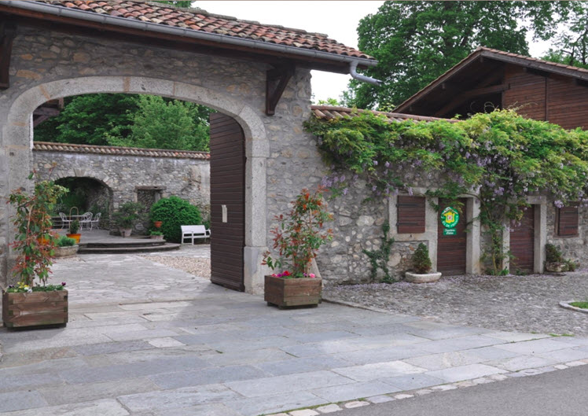

Adresse : 186 route d’Orcier, Hameau de Maugny, 74550 Draillant
Située au pied des montagnes à un quart d'heure de Thonon, la Ferme du Château nous accueillera pour le reste de la journée.
Nous avons été immédiatement charmés par ce lieu chaleureux à l'ambiance rurale.
La cérémonie laïque débutera aux alentours de 16h30 dans la cours de la ferme. Nous poursuivrons ensuite avec le vin d'honneur dans le jardin à partir de 17h30. Nous ferons également les photos de groupe.
Enfin, pour ceux qui sont invités au repas, il débutera aux alentours de 20h dans la salle de réception, suivi de la soirée dansante.
Un petit parking est accessible devant la ferme, et un autre un peu plus haut dans le village. Un gardien sera là pour nous guider à l'arrivée.